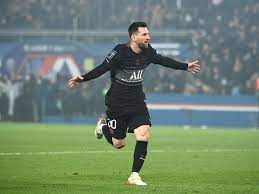

Lionel Messi es el máximo goleador de todos los tiempos en La Liga con 474 goles, convirtiéndose también en el segundo jugador con más goles en las cinco principales ligas de Europa, tras Cristiano Ronaldo (476).Lionel Messi ha marcado 672 goles con el FC Barcelona en todas las competiciones. Desde la 2008/09, ha anotado más de 30 goles en cada una de las últimas 13 temporadas, siendo la 2011/12 la más productiva (73 goles).Lionel Messi es el único jugador que ha marcado diez o más goles en LaLiga en 15 temporadas consecutivas, anotando 50 goles en la campaña 2011/12, la mayor cifra de un jugador en una sola temporada en la historia de la competición.Lionel Messi marcó en 21 partidos consecutivos en LaLiga entre noviembre de 2012 y mayo de 2013, la major marca de cualquier jugador en la historia de la competición.Lionel Messi ha marcado contra 38 equipos diferentes a lo largo de su trayectoria en LaLiga, más que cualquier otro jugador en la historia de la competición.Lionel Messi es el máximo goleador en la historia de El Clásico con 26 goles y el máximo goleador en el derbi catalán contra el Espanyol (25 goles).Lionel Messi ha marcado 15 goles en el Santiago Bernabéu en todas las competiciones, más que en cualquier otro estadio como visitante en su carrera en el FC Barcelona. Lionel Messi - FC Barcelona Asistido por Goles Luis Suárez 47 Dani Alves 42 Andrés Iniesta 37 Xavi Hernández 31 Pedro Rodríguez 25 Jordi Alba 23 Neymar Jr. 22 Ivan Rakitic 19 Sergio Busquets 16Lionel Messi es uno de los dos únicos jugadores que han alcanzado los 100 goles en la historia de la Champions League (120), tras Cristiano Ronaldo (134).Lionel Messi fue el primer jugador que marcó cinco goles en un partido en la Champions League. Fue contra el Bayer o4 Leverkusen en marzo de 2012 en el Camp Nou.Lionel Messi es uno de los seis jugadores que ha marcado más de 50 goles en la historia de la Copa del Rey y el único que ha marcado en seis finales diferentes.
PSG

El 10 de agosto, Messi firmó con Paris Saint-Germain un contrato por dos años con opción de extenderlo una temporada, con un salario de 36,5 millones de euros y usaría el dorsal 30, el mismo con el que debutó en el Barcelona.El 28 de septiembre, marcó su primer gol con el PSG, en el minuto '74 después de una pared con Mbappé, en la segunda jornada del Grupo A de la Liga de Campeones ante el Manchester City de Guardiola, con una victoria 2-0 de los parisinos en el Parque de los Príncipes.Ganó su octavo Pichichi y su séptimo Balón de Oro.Periodistas, jugadores y ex jugadores cuestionaron la elección de Messi,a tal punto que France Football decidió modificar los criterios de selección y evaluación del premioCon once goles y quince asistencias en 33 partidos, fue la temporada que menos jugó y anotó, si se exceptúan las dos primeras con el Barcelona